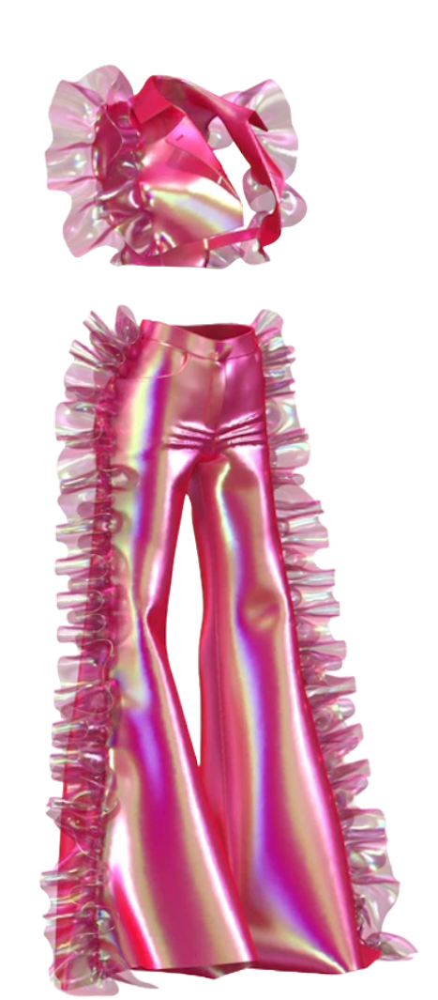
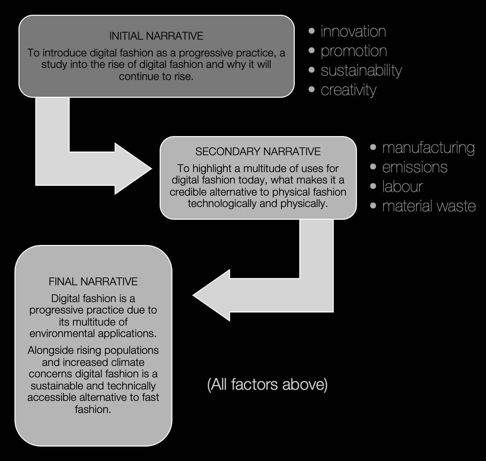
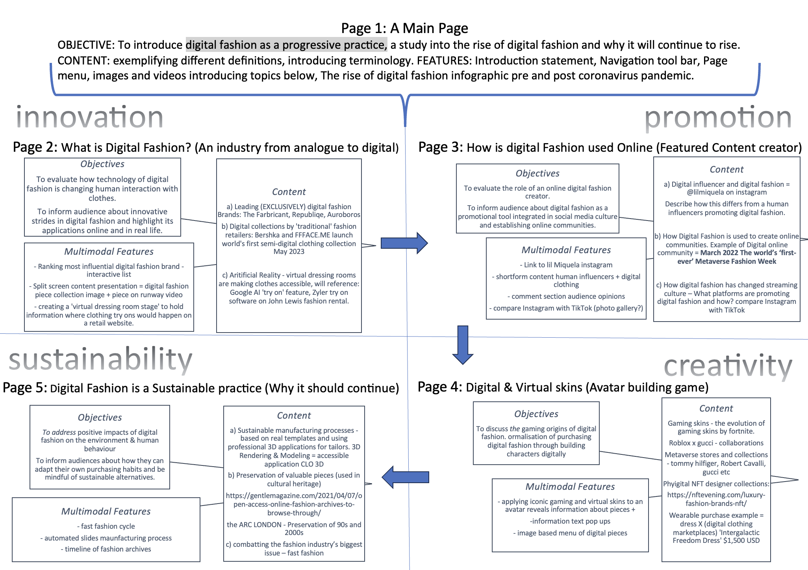

'Peacock flowers set' by Rabia Senuk
Reflective Statement
The 5 narrative points (including main page) of my website should effectively link to one another to convey the rise of digital fashion and necessity for environmental change. By cross referencing my mood board and structuring points of my website this allowed me to specify multimedia elements and their purpose relevant to each topic. My website will primarily rely on vibrant visual aids which juxtapose the minimalist colour scheme and strict modern alignment of media. Bodies of text should be structured within filled shapes or aligned in clear proximity of visual aids. Ultimately, I will strive to maximise user engagement by limiting textual information and selectively pairing multimodal devices to contribute to an overarching narrative: The digitisation of the fashion industry is an impactful business model that should rise in popularity.
'Cocoon dress' by Rabia Senuk
Narrative Impact on Design Thoughts (IL Task 2)
| Original Ideas |
Final Ideas |
| Navigation tool bar – going between pages remain constant regardless of webpage. |
SAME |
| Page menu – with 5 pages to choose from labelled as each topic name. |
SAME |
| Full page media with text overlay ‘Image Hover Fullscreen Zoom’.
(images and videos introducing topics ) - reference mood board
|
SAME |
| The rise of digital fashion infographic pre and post coronavirus pandemic. – find online examples |
Infographics should link to impacts on the environment from physical fashion or inform users about the benefits of digital fashion online |
My website In Vogue: Digital Fashion will cover how digital fashion has drastically risen in popularity and how it should be considered as an alternative to fast fashion. From my mood board I deducted 5 pages or narrative structure that I aim to use for my website. By applying further readings to these topics, I have identified specific case studies and multimedia resources to incorporate in each of these webpages.

Initial Narrative Plan

Audience Considerations
The overall message I want my audience to take away from my website is to understand the digital fashion industry as an effective business model: creating innovative products, promoting fashion in new ways, creativity as a product of consumer use or recreation, and the sustainability of digital fashion and the longevity of the digital fashion industry.
When considering audience experience take aways, the most engaging aspect of my website would be applying virtual skins the ability to modify an avatar and reveal information should build on my website as an interactive resource. It also mimics skin decision within gaming and virtual dressing rooms. Contrastingly, media displaying sustainable digital collections and less-waste fashion shows should broaden the audiences understanding of digital fashion as a popular and relevant practice from brands to encourage sustainability, accessibility and promotion of products.
When considering audience experience take aways, the most engaging aspect of my website would be applying virtual skins the ability to modify an avatar and reveal information should build on my website as an interactive resource. It also mimics skin decision within gaming and virtual dressing rooms. Contrastingly, media displaying digital collections and fashion shows should broaden the audiences understanding of digital fashion as a popular and relevant practice from brands to encourage sustainability, accessibility and promotion of products.
My website should also introduce new abilities to audience. Most importantly I aim to encourage audiences to increase the longevity of clothing items, reducing emissions and unethical labour involved with clothing manufacturing processes. Furthermore, those currently engaging or hoping to engage in clothing manufacturing will consider digitising the production of creative works this knowledge could/should also be applied to promoting digital over physical collections especially for social media.
My website will be structured based off online retailers who commonly use a navigation bar and menu tool to select sections to visit. Although pages all allude to the common theme ‘sustainable digital fashion’ both the menu and navigational bar will follow a chronological order 1-5 pages. Despite implementing a specific navigational system, to accommodate an audience of ranging interests, users can select a specific topic of interest and do not have to follow through a controlled set of pages to access desired information (the impact of digital clothing using game avatars, on the environment or social media) therefore the site will serve a theoretical navigational purpose. To ensure text is delivered clearly and is separated from my own identity as its author I will use a third-person narrative voice of a formal tone. The website would ideally be viewed as a fashion journal, something editorial.